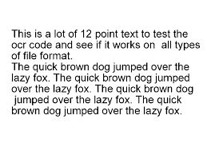
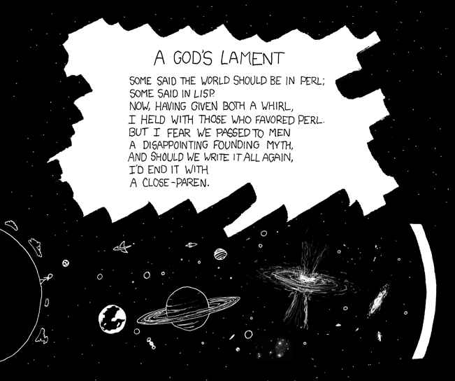

Lisp Project of the Day
tesseract-capi
You can support this project by donating at:


Or see the list of project sponsors.
tesseract-capi
| Documentation | 🥺 |
| Docstrings | 😀 |
| Tests | 🥺 |
| Examples | 😀 |
| RepositoryActivity | 😀 |
| CI | 🥺 |
It has nothing in common with the magic artefact, but anyway is able to do pretty cool things!
This library is a wrapper around Tesseract OCR and is suitable for an image to text transformations.
To test this system, you need to install the Tesseract library first. On OSX just do:
brew install tesseractThe CL library is not in the Quicklisp but can be installed from the https://ultralisp.org Follow the instruction from the repository:
https://github.com/egao1980/tesseract-capi
To make it work, you'll need a trained data for Tesseract engine. Happily, the Homebrew package includes some files for the English language.
To find out a path, do:
[poftheday] echo $(brew --prefix tesseract)/share/tessdata/
/usr/local/opt/tesseract/share/tessdata/Now we can test this library on this sample from the repository:

Here is how to translate this image into the text:
POFTHEDAY> (tesseract-capi::tessversion)
"4.1.1"
POFTHEDAY> (let ((tesseract-capi:*tessdata-directory*
"/usr/local/opt/tesseract/share/tessdata/"))
(tesseract-capi:image-to-text
(asdf:system-relative-pathname
:tesseract-capi "tests/data/fox.png")))
"This is a lot of 12 point text to test the
ocr code and see if it works on all types
of fle format
The quick brown dog jumped over the
lazy fox. The quick brown dog jumped
over the lazy fox. The quick brown dog
jumped over the lazy fox. The quick
brown dog jumped over the lazy fox
"Now let's try it on this XKCD comic:

POFTHEDAY> (let ((tesseract-capi:*tessdata-directory*
"/usr/local/opt/tesseract/share/tessdata/"))
(tesseract-capi:image-to-text
"docs/media/0203/xkcd-312.png"))
"A GODS LAMENT
SOME SAID THE WORLD SHOULD BE IN PERL;
SOME. SAID IN LISP
NOW, HAVING GIVEN BOTH A WHIRL,
I HELD WITH THOSE WHO FAVORED PERL.
BUT I FEAR WE PASSED TO MEN
A DISAPPOINTING FOUNDING MYTH,
AND SHOULD WE WRITE IT ALL AGAIN,
TO ENO IT WITH
A CLOSE -PAREN.
SY i
\\ ad an ran
cS co V
a, em oo
2 ee eee
@ P= : } 0.\" :
a OO
"As you can see, it outputs some junk at the end, but main text is recognized almost perfectly!
I think, this is a pretty cool library! For example, you can use it plus Montezuma to build a personal search engine for your image and scans collection. It's a matter of one night.
Brought to you by 40Ants under